/* mandy-barker — proofs */
11 plates. Deterministic overlays rendered by the composition-analysis skill.
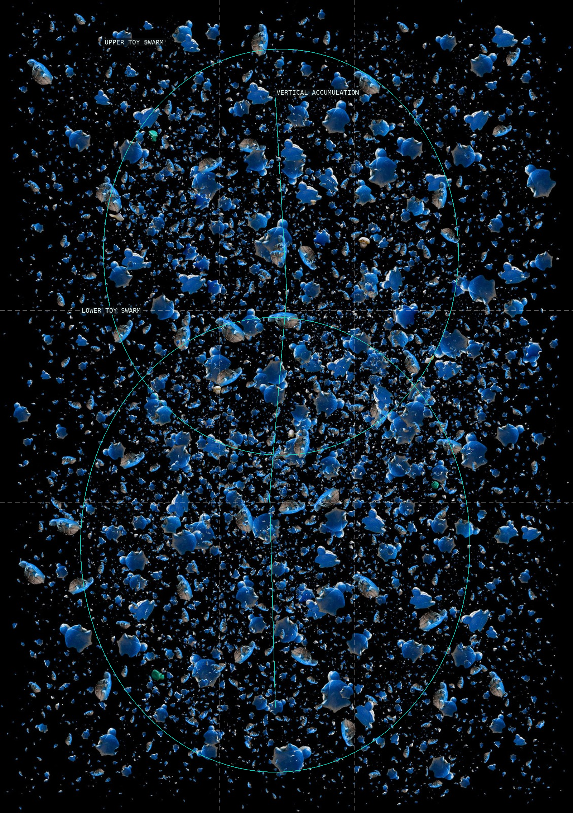
01-soup-turtle
Two broad toy swarms make a tall field of repeated blue forms.
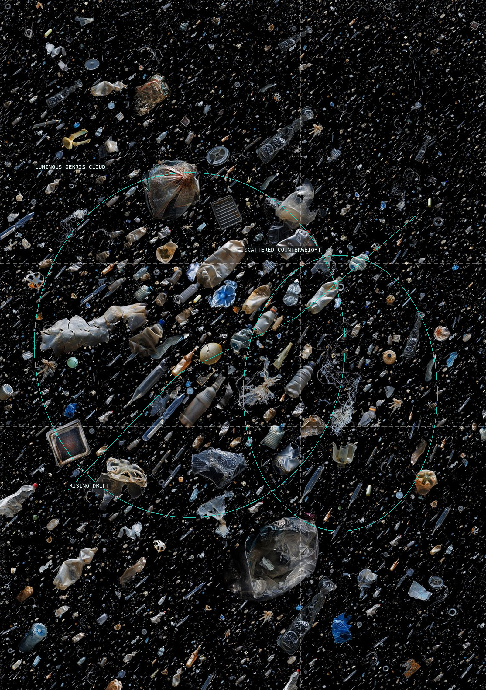
02-soup-translucent
An off-center cloud and loose counterweight organize pale debris.
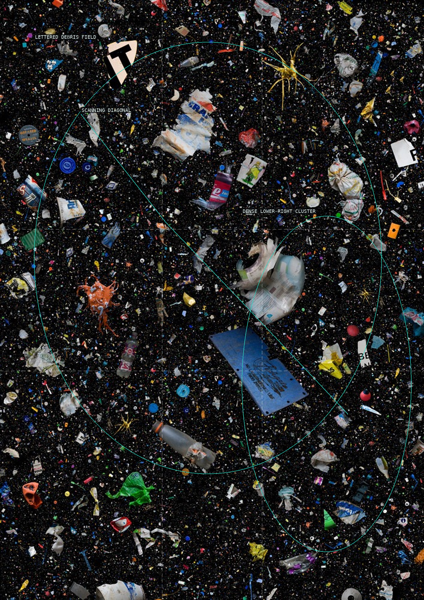
03-soup-alphabet
Lettered fragments force a diagonal scan through an all-over field.
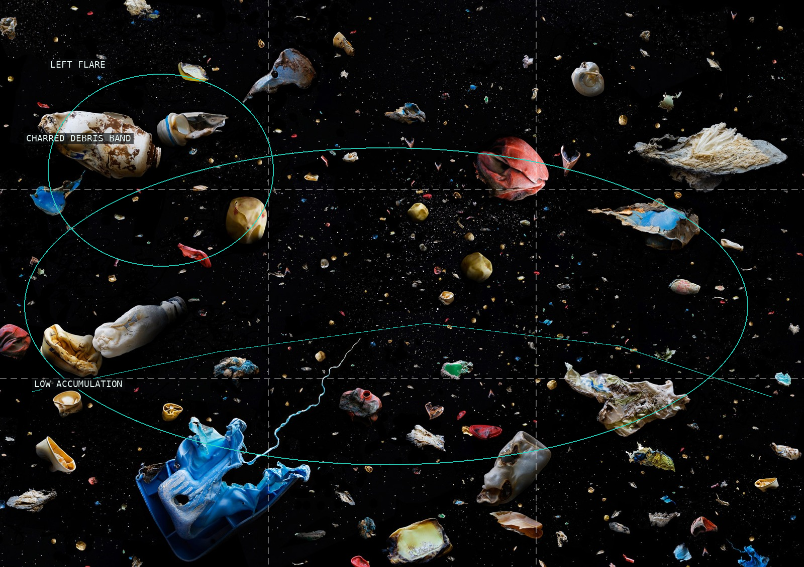
04-soup-burnt
A low damaged scatter momentarily suggests shallow terrain.
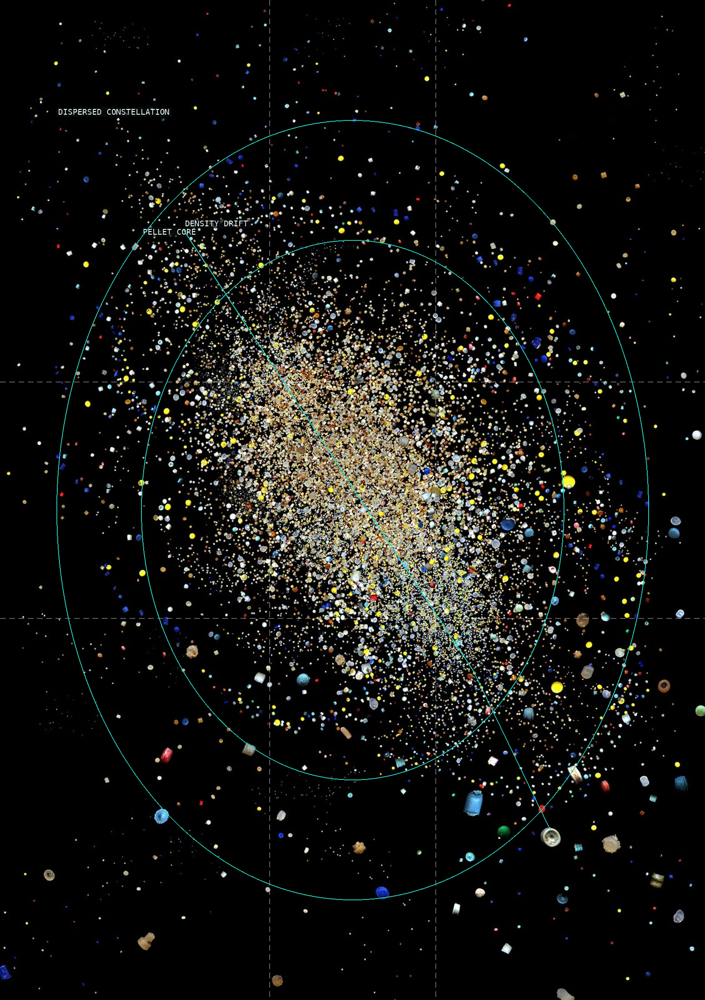
05-soup-nurdles
A pellet core dissolves into a deep, dispersed constellation.
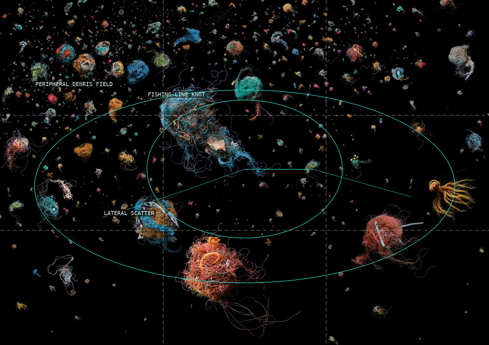
06-soup-birds-nest
A fishing-line knot holds an uneven peripheral debris field.
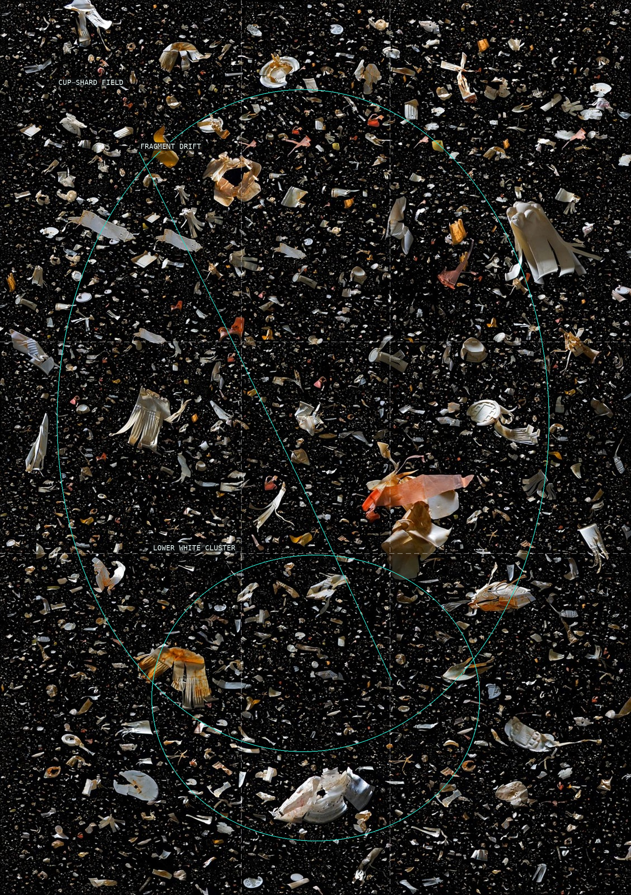
07-soup-fragmented-cups
Pale cup shards make a thick field with a lower white weight.
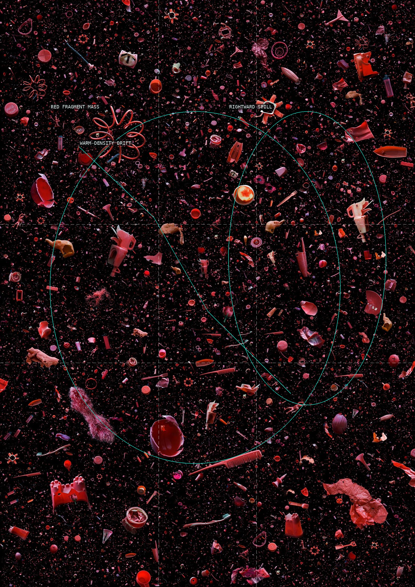
08-soup-tomato
A warm fragment mass leaks outward into black space.
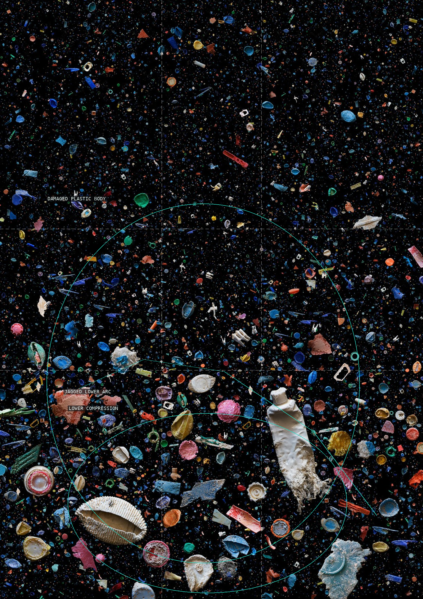
09-soup-refused
A compressed lower grouping makes damaged plastic feel bodily.
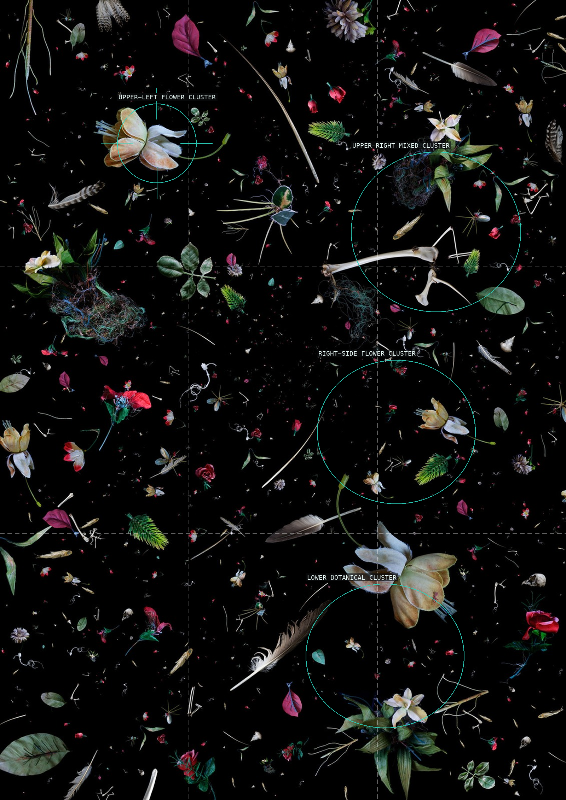
10-soup-ruinous-remembrance
Separate floral and material clusters punctuate a spacious black field.
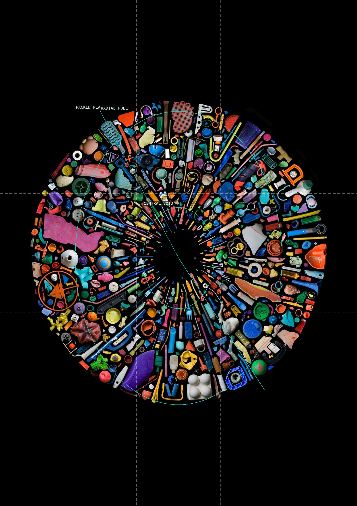
11-soup-500-plus
A packed colored ring makes its central void consequential.